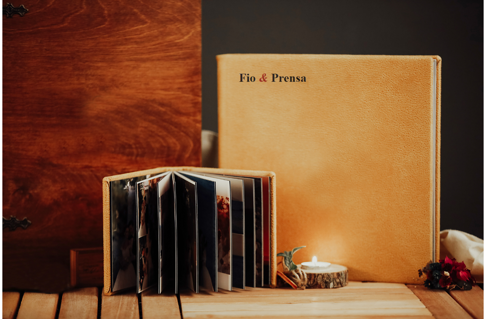
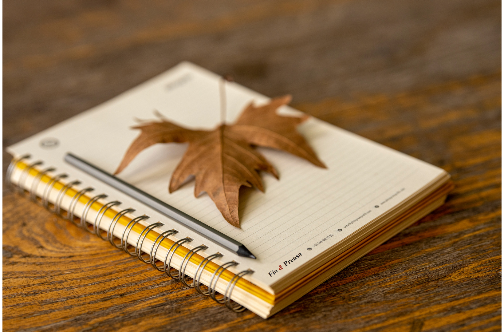
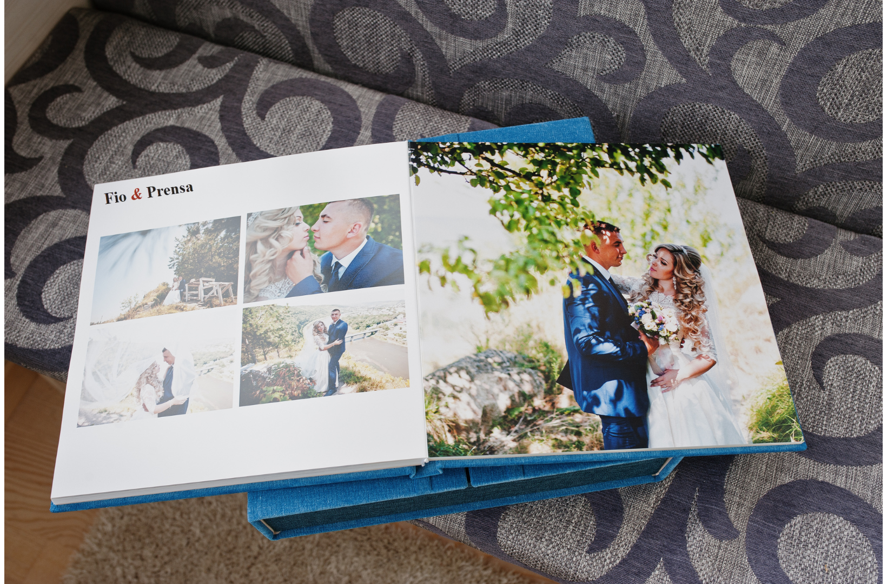
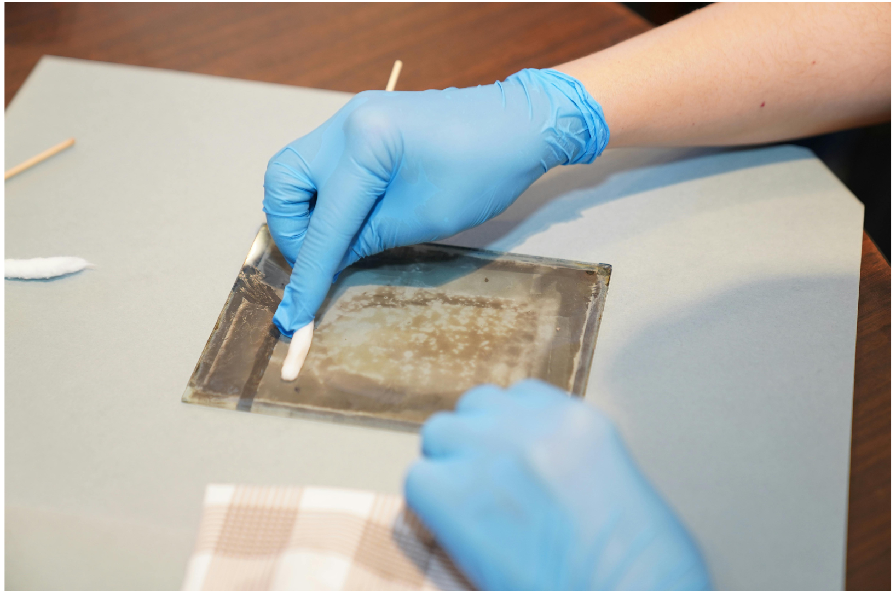

Encadernação artesanal
Livros que se seguram nas mãos por gerações.
Costuramos, colamos e prensamos à mão — do caderno de uso diário à restauração de exemplares de família. Cada peça passa pelas mesmas quatro etapas que aprendemos há trinta anos.
Ver serviços- Linho belga, cor terracota Capa dura, acabamento fosco
- Percalux verde-musgo Resistente à umidade
- Papel de guarda marmorizado Feito à mão, padrão único
Nossa prática
O ofício, em quatro etapas
Cada livro passa pela mesma sequência de trabalho, do primeiro caderno de páginas soltas até a prensa final.
-
01
Dobra
As folhas são dobradas em cadernos e organizadas na ordem de leitura.
-
02
Costura
Os cadernos são costurados manualmente com fio encerado, ponto a ponto.
-
03
Colagem
O lombo recebe cola natural, que dá firmeza sem enxergar o papel.
-
04
Personagem
O volume descansa na prensa por 24h para fixar a forma definitiva.
Nossa oficina
Peças recentes
Projetos feitos à mão, um por vez.




“Levei o diário do meu avô, que estava se desfazendo, e voltou como se tivesse sido feito ontem — mas ainda com a capa original.”